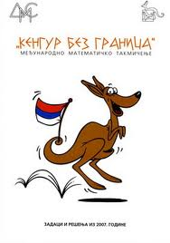

За нама је још једна успешно завршена школска година. Желимо вам леп и весео распуст, да се одморите и чили и весели нам поново дођете у септембру. Нашим матурантима, после напорног, али надамо се успешног завршног испита, желимо успешан наставак школовања, и да нас се понекад сете...
Видимо се 1. септембра,
Колектив ОШ ''Војислав Вока Савић''
Потписан уговор са ЕПС-ом
Основна школа „Војислав Вока Савић“ из Лазаревца, објављује
О Б А В Е Ш Т Е Њ Е
о закљученом уговору у јавној набавци мале вредности добара –Електрична енергија за потребе Основне школе „Војислав Вока Савић“ из Лазаревца.
На наградном конкурсу за израду дигиталне форме културне баштине под називом ''Виртуелни завичај'', ученици 5-3 одељења наше школе:
Милан Паклар, Ђорђе Констадиновић, Лазар Марковић и Немања Ђурић
су са својим филмом: ''Црква Светог Великомученика Димитрија''
у конкуренцији од 239 кратких филмова добили:
Специјално признање за изузетан допринос на пројекту и наградном конкурсу
које додељује Центар за унапређење наставе ''Абакус'' под покровитељством Министарства спољне и унутрашње трговине и телекомуникација
ЧЕСТИТАМО МИЛАНУ, ЂОРЂУ ЛАЗАРУ И НЕМАЊИ !
ИСПРАЋАМО ЈОШ ЈЕДНУ ГЕНЕРАЦИЈУ ОСМАКА
Матуранти ОШ Војислав Вока Савић прославили су матурско вече у петак 06. 06. 2014. у центру за културу у Лазаревцу. Погледајте слике у Галерији слика...
ЕКСКУРЗИЈА 2. разреда
02. јун 2014.год. Београд
Уживали смо на излету - Коњички клуб „МИЛИЦИОНАР“, Ботаничка башта „ЈЕВРЕМОВАЦ“ и Ада Циганлија. И свирао нам је „SO SABI“! Свирали су наши малци по удараљкама и ђускали за све паре! Толико су били слатки, да су их и пролазници фотографисали. :). Погледајте слике
ТЕСЛА ИНФО КУП - ВЕЛИКИ УСПЕХ НАШЕ ШКОЛЕ
01. јун 2014.год.
На републичком такмичењу из информатике и рачунарства под називом Тесла Инфо Куп, одржаном 01. јуна 2014.године у Средњој електротехничкој школи ''Никола Тесла'' у Нишу, ученици наше школе Минић Алекса 7-2 иЈанковић Марко 7-3 су са великим успехом представили нашу школу, заузевши у тимском пласману 14. место од 56 ученичких тимова.
Алекса Минић је у појединачној конкуренцији на Андроид квизу освојио ТРЕЋЕ МЕСТО, што представља највећи успех наше школе на овогодишњим такмичењима.
ЧЕСТИТАМО АЛЕКСИ !!!!!
Погледајте више на официјалном сајту Тесла Инфо Куп-a:
11. маја у Сремским Карловцима одржано је Републичко такмичење из књижевности под називом Књижевна олимпијада. Међу најбољим основцима биле су и наше Анђела Максимовић и Ива Читлучанин. Ученици су радили тест од двадесет задатака и освојиле, Ива 17, а Анђела 16 бодова што је свакакао за похвалу.
Поред такмичарског дела, имали смо и обилазак Карловца, прошетали и упознали се са радом најстарије српске гимназије, одмор уз топлу чоколаду и сладолед. Надамо се да ћемо и идуће године бити гости ове дивне устанве.
КЕНГУР БЕЗ ГРАНИЦА

Овогодишњи награђени ученици на Међунардном математичком такмичењу под називом ''Кенгур без граница'' су управо наши најмлађи математичари:
Име и презиме
Разред
Учитељица
Поени
Награда
Михаило Радовановић
1
Јаблан Ана
90
I
Михаило Ђурђевић
1
Биљана Шутић
75
Похвала
Јелисавета Стајчић
1
Јаблан Ана
67,5
Похвала
Александра Пауновић
1
Биљана Шутић
66,25
Похвала
Мина Томовић
2
Сика Марина
52,25
Похвала
Исидора Драгићевић
2
Сика Марина
52,25
Похвала
Милица Благојевић
2
Сика Марина
52,25
Похвала
Огњен Јовановић
2
Сика Марина
52,25
Похвала
Мина Орловић
3
Павић Слободанка
78,25
Похвала
ЧЕСТИТАМО !!!
УСКОРО...Републичка такмичења
01.мај 2014.год.
Стиже месец мај, а са њим и Републичка такмичења. Ове године, наша школа ће имати своје представнике на републичким такмичењима из математике, српског језика и информатике и рачунарства.
10. маја ове године у Јагодини одржаће се Републичко такмичење из математике. За нашу школу ће се такмичити ученик Добросављевић Милош VII-2 који је 5. априла на Градском такмичењу. освојио другу награду са 87 бодова.
Такође, истог дана, 10. маја, али у Сремским Карловцима, ученице Максимовић Анђела VII-2 и Читлучанин Ива VII-1 ће учествовати на Републичком такмичењу из српског језика под називом ''Књижевна олимпијада''.
18. маја ове године у Нишу, на Републичком такмичењу из информатике и рачунарства под називом ''Тесла Инфо Куп'', за нашу школу наступиће као тим ученици Минић Алекса VII-2 и Јанковић Марко VII-3.
ЧЕСТИТАМО ИМ НА ДОСАДАШЊИМ УСПЕСИМА И ЖЕЛИМО ПУНО УСПЕХА НА ПРЕДСТОЈЕЋИМ РЕПУБЛИЧКИМ ТАКМИЧЕЊИМА!
ГРАДСКО ТАКМИЧЕЊЕ ИЗ ИСТОРИЈЕ
26. април 2014.год.
На Градском такмичењу из историје одржаном 26. априла 2014. године у ОШ „20октобар“ У Београду ученик V-4 Ђорђе Мумовић освојио је 3. место !
ЧЕСТИТАМО ЂОРЂУ!
УЧЕНИЦИ 8. РАЗРЕДА НА ЕКСКУРЗИЈИ
30. aприл 2014.год.
Тродневна екскурзија ѕа ученике осмог разреда реализована је од 24. до 26. априла 2014.године. Уживали смо у лепотама источне Србије и Подунавља. Посетили смо: римски логор Виминацијум код Костолца, праисторијско налазиште Лепенски Вир, Ђердапску клисуру и хидроцентралу Ђердап. У Неготину (где смо преноћили обе ноћи уз одличан провод на журци) посетили смо музеј Крајине, спомен-кућу Стевана Мокрањца, нашег најпознатијег композитора и најстарију кућу у овом граду у којој је смештен музеј јунака Првог српског устанка хајдук Вељка Петровића. При повратку обишли смо Гамзиград (Felix Romulianu), налазиште из римског доба које је уврштено у светску културну баштину Унеско, Ресавску пећину и водопад Лисине надомак ње, а вечерња служба затекла нас је у манастиру Манасији, задужбини деспота Стефана Лазаревића. Послужило нас је лепо и прохладно време без кише и кад смо се у вечерњим сатима вратили у топле лазаревачке домове, схватили смо вредност и предност начих колубарских рудника који још греју станове.
На регионалном такмичењу из информатике и рачунарства под називом Тесла Инфо Куп, одржаном 26. априла 2014.године у Средњој техничкој ПТТ школи у Београду, ученици наше школе Минић Алекса 7-2 иЈанковић Марко 7-3 су изборили пласман на РЕПУБЛИЧКО ТАКМИЧЕЊЕкоје ће се одржати 18. маја у Средњој електротехничкој школи ''Никола Тесла'' у Нишу.
Алекса Минић је учествовао на Андроид квизу и освојио убедљиво ПРВО МЕСТО оставивши другопласираног далеко иза себе, док је Марко Јанковић учествовао на Мoodle тесту и остварио запажен разултат.
У генералном, тимском, пласману заузели су 7. место од укупно 51 такмичарског тима чиме су обезбедили учешће на предстојећем Републичком такмичењу.
ЧЕСТИТАМО АЛЕКСИ И МАРКУ!
ОПШТИНСКО ТАКМИЧЕЊЕ ''Шта знаш о саобраћају?''
12. април 2014.год.
У суботу 12. априла, у нашој школи одржано је 45. општинско такмичење под називом ''Шта знаш о саобраћају?''. Учествовало је 6 школа са подручја општине Лазаревац. Свака школа је имала своју екипу за групу ''Б'' и групу ''Ц'', а неке школе су имале и резервне такмичаре. Наша школа је у групном пласману заузела 3. место. Прелиминарне резултате можете погледати на следећим линковима:
Градско такмичење је 10. маја 2014.године у Београду, а такмичати који ће представљати нашу општину биће одабрани према оствареном пласману на општинском такмичењу.
УЧЕНИЦИ ПРОДУЖЕНОГ БОРАВКА НА ИЗЛЕТУ
09. aприл 2014.год.
Ученици продуженог боравка су били на једнодневном излету у Београду. Посетили су позориште ''Бошко Буха'' и ''Minicity'' (интерактивни тематски парк). Слике можете погледати овде...
''ТРАЖИ ПА ЋЕШ НАЋИ, ЧУВАЈ ПА ЋЕШ ЗНАТИ''
05. aприл 2014.год.
У суботу 5. априла од 11 часова у просторијама Модерне галерије Лазаревац одржала се дечја археолошка-конзерваторска радионица "Тражи па ћеш наћи, чувај, па ћеш знати", у којој су учествовали ученици ОШ "Војислав Вока Савић" издвојено одељење Бурово са учитељицом Иваном Романовић. Овом радионицом Модерна галерија - Центар за културу Лазаревац наставља реализацију својих едукативних програма за најмлађе посетиоце.
Циљ овог пројекта је да кроз игру, уз надзор стручних лица, на једноставан начин деца уведу у свет археологије и конзервације, али и да им се развије свест о важности културног наслеђа и његовог очувања.
Радионицу су водиле Даринка Станојевић, кустос-историчар уметности и Катарина Мијаиловић, историчар уметности. Слике можете погледати овде...
КОНКУРС 26. Међународног Фестивала Хумора за децу (за децу до 15-те и педагоге)
ПИШИТЕ, СЛИКАЈТЕ, ПЕВАЈТЕИРАДУЈТЕ СЕСАНАМА
стога – папир, оловке, боје, ноте и МАШТУ па обрадујте стихом, причом, афоризмом, скечом, сликом, карикатуром, стрипом, сонгом, филмом... тему
СМЕХА, СМЕХА ДЕЦИ !
И ове године: посебне награде за радове посвећене сећању на Колубарску битку.
На конкурс можете пријавити и учешће имитатора и драмских група (уз видео запис представа). Рок за слање радова је : 20. јун 2014. са назнаком "за Фестивал".
Милица Ћеранић, ученица III-3 је са својом песмом „Лав и Лозница“ остварила учешће у финалном такмичењу Фестивала поезије београдских основних школа„Мали победник“. Oна ће се даље такмичити за пласман на међународни фестивал „Дјечије царство“ у Бањалуци . Песма „Лав и Лозница“ је на 25. Међународном Фестивалу хумора за децу у Лазаревцу, у категорији хумористичке песме, освојила 3. место.
ЧЕСТИТАМО МИЛИЦИ!
ДАН ШКОЛЕ
21. март 2014.год.
Централна прослава поводом Дана наше школе, њеног 125 рођендана, одржана је и ове године у Лазаревачком центру културе. У присуству бројних гостију, међу којима посебно место заузимају наше драге колеге у пензији, наших драгих ученика и њихових родитеља, наставног и ненаставног особља школе, изведена је приредба пуна песме, игре, скечева, смеха,... Поред ђачке приредбе, одржана су и разна спортска такмичења, као и изложба ликовних радова у холу Центра културе.
Наша школа је, као и претходних година била део Међунардног математичког такмичења под називом ''Кенгур без граница'' . Ове године учешће на овом такмичењу узео је 171 ученик наше школе од трећег до осмог разреда. У ишчекивању резултата, надамо се њиховом што бољем пласману.
ПРОДУЖЕНИ БОРАВАК У ПОСЕТИ ЦРКВИ Светог Димитрија
19. март 2014.год.
Ученици продуженог боравка били су на изложби икона у парохијском дому. Обишли су цркву Светог Димитрија и спомен-костурницу. Проширили су знања о иконама, фрескама, молитвама и вери. Слике можете погледати овде...
ТЕСЛА ИНФО КУП
17. март 2014.год.
У дигиталном кабинету наше школе данас је одржано школско такмичење из информатике и рачунарства под називом Тесла Инфо Куп. Учествовало је 10 ученика седмог и 5 ученика осмог разреда. Два ученика због болести нису учествовала и за њих биће објављен накнадни термин за израду теста. Званични резултати ће бити објављени по завршетку свих школских такмичења која се одржавају целе ове седмице. Надамо се што бољем пласману наших ученика.
Tesla Info Kup
Obaveštenje o održavanju školskog takmičenja
Školsko takmičenje biće održano 17.03. 2014. u dva termina u 12h i 13h u kabinetu za informatiku. Dodatna uputstva vezana za takmičenje su objavljena na web-stranici:
Prijavljeno je 175 škola sa skoro 2.500 učesnika, iz sva četiri regiona.
Testiranje će se obaviti na Moodle portalu Tesla Info Kupa. Za pristup Moodle-u koristićete iste parametre za pristup koji su vam već dostavljeni (učeničke-poimenične naloge). Za potrebe školskih testiranja biće otvoren poseban kurs pod imenom "Školsko takmičenje 2014", sa posebnim testom koji će biti vidljiv od ponedeljka ujutru.
Test će uključivati i određeni procenat pitanja koja nisu bila dostupna na vežbaonici, ali koja su istog formata i težine kao i ona sa kojima su se učenici upoznali. Takođe, po dogovoru sa skupova, pitanja iz Office 2003 paketa zamenjena su pitanjima iz verzije 2010. Uzorak tih pitanja biće dostupan na vežbaonici.
Za učenike koji su iz bilo kog razloga sprečeni da odrade test u zakazanom terminu, biće organizovan naknadni, rezervni termin po završetku redovnih testiranja.
Svim učesnicima puno sreće na predstojećem takmičenju!
Прослава 8. марта у Бурову
08. март 2014.год.
Подручна одељење у Бурову је поводом 8. марта, Међународног празника жена одржало пригодну приредбу на опште задовољство свих ђака и присутних.
Посета цркви СВЕТОГ ВЕЛИКОМУЧЕНИКА ГЕОРГИЈА у Дрену
07. март 2014.год.
Подручна одељења Дрен и Бурово су посетили Цркву Светог великомученика Георгија у Дрену и том приликом се ближе упознали са историјом ове цркве и животу и делу свеца чије име она носи.
У СУСРЕТ ''ДАНУ ЖЕНА''
06. март 2014.год.
Дан жена је установљен на Другој међународној конференцији жена социјалиста, 8. марта 1910. године у Копенхагену, на иницијативу Немице Кларе Цеткин, тадашње лидерке женског радничког покрета.
Тај празник обележава се у знак сећања на демонстрације америчких радница у Чикагу 1909. године и њујоршки марш више од 15.000 жена које су тражиле краће радно време, боље плате и право гласа.
Дан жена први пут је обележен 1911. године у Аустрији, Немачкој, Швајцарској и Данској, а тог дана је у тим земљама више од милион жена и мушкараца присуствовало скуповима на којима је захтевано да жене гласају на изборима, да им се омогући да заузимају јавне положаје, да имају право на рад и стручно образовање.
Демонстрације радница одржавале су се у скоро свим већим европским градовима, сваке године до 1915. године и ширења Првог светског рата, а главни захтев тих маршева био је да европске земље коначно уведу универзално право гласа.
На овај дан позивју се сви да дају свој допринос укидању дискриминације жена у теорији и пракси, али се и апелује на власти да политика која се води буде у складу с потребама жена.
У Србији се Дан жена обележава од 1914. године, а Уједињене нације 8. март су званично прогласиле Међународним даном жена 1975. године.
''ЧУВАРИ'' - Снежана Вујовић-Николић
06. март 2014.год.
Ученици 8. разреда наше школе посетили су изложбу под називом ЧУВАРИ од Снежане Вујовић-Николић постављене у просторијама Модерне галерије. Слике са ове изложбе можете погледати овде...
''Калиографија на свили'' - Добрила Ашкрабић
04. март 2014.год.
Ученици 6. разреда наше школе посетили су изложбу под називом Калиографија на свили од Добриле Ашкрабић постављене у просторијама Градске библиотеке ''Димитрије Туцовић''. Слике са ове изложбе можете погледати овде...
КОНКУРС ''ВИРТУЕЛНИ ЗАВИЧАЈ''
Центар за унапређење наставе ''Абакус'' под покровитељством Министарства спољне и унутрашње трговине и телекомуникација започело је пројекат под називом:
У оквиру пројекта предвиђен је наградни конкурс за ученике основних школа за израду дигиталне форме културне баштине, односно, израду кратког филма (дужине од 3 до 5 минута) о неком догађају, личности, грађевини и сл. која представља културну баштину њиховог краја. Филмове израђују ученички тимови састављениод 3 до 5 ученика, уз менторство наставника.
За све информације обратити се наставнику информатике и рачунаства Слађани Маченовски, или посетити сајт http://virtuelnizavicaj.edu.rs
Свечано у духу традиције Српског народа, прославили смо школску славу Светог Саву. У присуству великог броја ученика и радника наше школе, заједно са свештеницима наше цркве, извршили смо обред ломљења славског колача. Овогодишњи домаћин славе је наставник српског језика Мирослав Рабреновић.
Празник посвећен српском просветитељу Светом Сави је обележен уз приредбу, коју су припремили наши најмлађи ђаци прваци.
Ускоро крећу такмичења из многих наставних предмета. Надамо се да сте се добро припремили да што боље представите себе и своју школу.
СВИМ УЧЕНИЦИМА ЖЕЛИМО ДА ПОСТИГНУ ШТО БОЉЕ РЕЗУЛТАТЕ!
СРЕЋНО!!!
УПИС У ПРВИ РАЗРЕД ШКОЛСКЕ 2014/2015.год.
Драги родитељи,
Важно је да своје дете на време упишете у први разред основне школе, да са наставом крене од 1.септембра и да редовно иде на часове.
Уколико је ваше дете напунило шест и по година, стасало је да од 1.септембра ове године крене у први разред основне школе. Полазак у школу је свечани тренутак за свако дете, па је важно да све припреме за упис и полазак извршите на време, тј. да ваше дете припремите за полазак у школу и да га упишете у школу.....
Традиционална приредба наше школе, одржана је по трећи пут у Лазаревачком центру културе. У приредби је учествовало 60 ученика. Новогодишње песме и жеље су на прави начин најавиле почетак зимског распуста и наступајуће празничне чаролије.